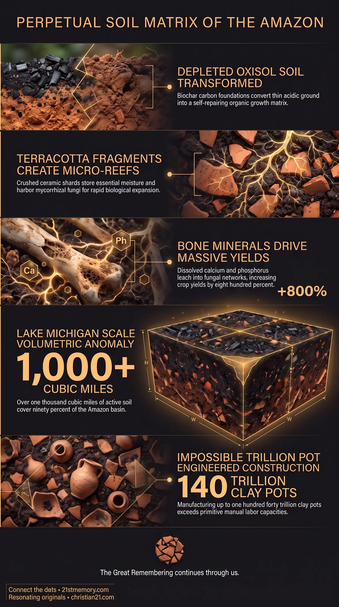

Miracle Soil
Miracle Soil — A self-regenerating engineered soil matrix that keeps the Amazon Basin fertile for millennia without chemical inputs.

Miracle Soil — A self-regenerating engineered soil matrix that keeps the Amazon Basin fertile for millennia without chemical inputs.

Engineered Black Earth of the Amazon — Terra preta covers most of the basin at a Lake Michigan-scale volume no tribal labor can explain.
Miracle Soil—frequently designated as Amazonian Soil or terra preta (meaning Black Earth)—is a highly specialized, artificially engineered, self-sustaining soil matrix spanning millions of square miles across the Amazon Basin. Natural tropical soils in this region, known as Oxisols, are notoriously thin, acidic, and nutrient-poor because relentless tropical rainfall rapidly leaches away essential minerals. Miracle Soil completely defies this harsh environment by retaining perpetual fertility for millennia without chemical inputs or industrial intervention.
Operating as a living circular ecosystem, this soil possesses unique self-regenerating properties, utilizing an interconnected network of native microbes and fungi that synthesize and accumulate organic carbon faster than it can decompose. This biological mechanism enables the soil to grow over time and deliver extraordinary crop yield increases of up to 800% compared to unconditioned surrounding ground. While mainstream institutional narratives attempt to downplay Miracle Soil as a series of isolated 350-hectare patches formed by casual indigenous charcoal and cooking refuse, physical survey data confirms that this continuous matrix covers over 90% of the 2.7 million square mile Amazon Basin at a average depth of half a meter. It stands as the physical smoking gun of a massive, pre-inversion agricultural master plan.
Mainstream history categorizes Miracle Soil as a historical mystery and then falsely files it under casual indigenous charcoal and tribal refuse dumps to conceal a continent-scale permaculture installation.
The total physical volume of Miracle Soil constitutes a Lake Michigan-scale anomaly, containing over 1,000 cubic miles of engineered matter that sits in the same "impossible garden" file as other deliberate planetary permaculture structures.
The surrounding Living Garden and its underlying soil foundation are older than the Atlantean/Lemurian collapse, originating in a pre-inversion epoch rather than being a recent post-collapse development by primitive tribes.
Mathematical analysis of the soil's compulsory components—specifically requiring up to 140 trillion manufactured clay pots weighing up to 700 billion tons—proves that manual human labor without modern heavy machinery could never have created this matrix, thoroughly debunking official historical timelines.
Miracle Soil is constructed from a precise biological and mineral recipe. Its foundation consists of biochar, or pyrogenic carbon, produced through the low-oxygen combustion of woody biomass. This charcoal does not degrade over time; its porous architecture holds moisture, retains volatile nutrients, and stores carbon for thousands of years. Intermixed with this carbon base are dissolved animal and fish bones, which gradually leach massive concentrations of phosphorus and calcium directly into the root zone.
A crucial mechanical component involves millions of microscopic crushed pottery shards embedded throughout the earth. These terracotta fragments function as microbial reefs, offering structural micro-pockets that retain water and provide safe harbor for mycorrhizal fungi and beneficial bacteria to colonize. Layered with organic waste, plant residues, and compost, this biological matrix continuously generates organic carbon faster than natural oxidation depletes it, allowing the soil to self-repair, expand, and generate up to 800% higher crop yields than untreated Oxisols.
Mainstream institutional narratives minimize this phenomenon by claiming Miracle Soil exists only in scattered 350-hectare patches around ancient villages. Field measurements reveal that terra preta extends continuously across 90% or more of the 2.3 to 2.7 million square mile Amazon Basin, reaching depths between 0.5 meters (24 inches) and 2.0 meters (6.6 feet).
At an average depth of half a meter across 2.7 million square miles, the required volume of Miracle Soil reaches 3.50 trillion cubic meters, or roughly 839 to 1,023 cubic miles of earth. To put this Lake Michigan-scale anomaly into perspective, 1,023 cubic miles of soil is enough to completely fill Lake Michigan from its floor to its surface, with enough dirt remaining to bury the entire state of Texas under a full foot of topsoil.
VOLUMETRIC COMPARISON
+-------------------------------------------------------+ | Amazon Miracle Soil Volume: ~1,023 Cubic Miles | | ===================================================== | | [ Fills Lake Michigan Entirely (Floor to Surface) ] | | + | | [ Buries the Entire State of Texas 1 Foot Deep ] | +-------------------------------------------------------+
Mainstream academic explanations attribute this soil to primitive tribal populations working over a span of 2,000 to 7,000 years. However, manually manufacturing and spreading 3.50 trillion cubic meters of conditioned soil across the Amazon Basin would require 1.75 million years of continuous manual labor for a population of 10 million people working without basic equipment like wheelbarrows.
The ceramic material calculations further expose the absurdity of official historical claims. Assuming a highly conservative baseline where crushed pottery shards account for just 1% of the total soil volume, installing Miracle Soil across the basin requires 35 billion cubic meters of solid fired clay. Because terracotta has a density of 2 metric tons per cubic meter, this equates to 70 billion metric tons (77 billion US tons) of pottery. If an average clay pot weighs 5 kilograms (11 lbs), achieving a 1% ratio requires manufacturing, baking, smashing, and mixing 14 trillion individual pots. In high-density zones where pottery shards make up 10% of the soil volume, these figures scale to 700 billion tons of clay and 140 trillion clay pots. It is physically impossible for such material volumes to result from casual domestic cooking fires or village refuse.
Miracle Soil does not exist in isolation; it forms the foundational nutrient engine for the broader Living Garden permaculture system. The Amazon Basin is not an accidental, virgin wilderness, but an intentionally planted, high-density food production network. This engineered soil matrix directly supports specialized canopy species such as the Brazil nut tree—which relies on a complex, three-way symbiotic lock involving female orchid bees, canopy-dwelling orchids, and the razor-toothed agouti rodent to reproduce—and the Peach Palm, an ultra-dense nutritional powerhouse fully domesticated prior to modern historical records.
This entire agricultural infrastructure dates back to the Atlantean/Lemurian collapse epoch, long before the series of catastrophic resets, artificial ice ages, and biological downgrades altered the surface plane. The soil was constructed during an age when high-density Taran vessels possessed full telepathic and technological connection to the planetary aether, operating long before legal capture, monetary usury, and academic distortions were installed to obscure the realm's true history.
The existence and physical reality of Miracle Soil completely dismantle mainstream historical, evolutionary, and archaeological narratives regarding ancient human history. By proving that the Amazon Basin is an artificially engineered, continent-scale garden, terra preta exposes institutional education as a system of deliberate concealment designed to hide past high civilisations.
Furthermore, Miracle Soil demonstrates the principle of zero-entropy, harmonious living technology. Unlike modern entropic agriculture—which relies on chemical fertilizers, destructive tilling, and toxic pesticides that deplete topsoil—Miracle Soil represents a permanent, self-regenerating biological system capable of delivering continuous food abundance indefinitely. Recognizing the true scale and origin of this soil serves as a primary physical key for the human mind to break through institutional programming, reject manufactured scarcity, and remember the true nature of the realm.
This topic is free to share. Support the archive →